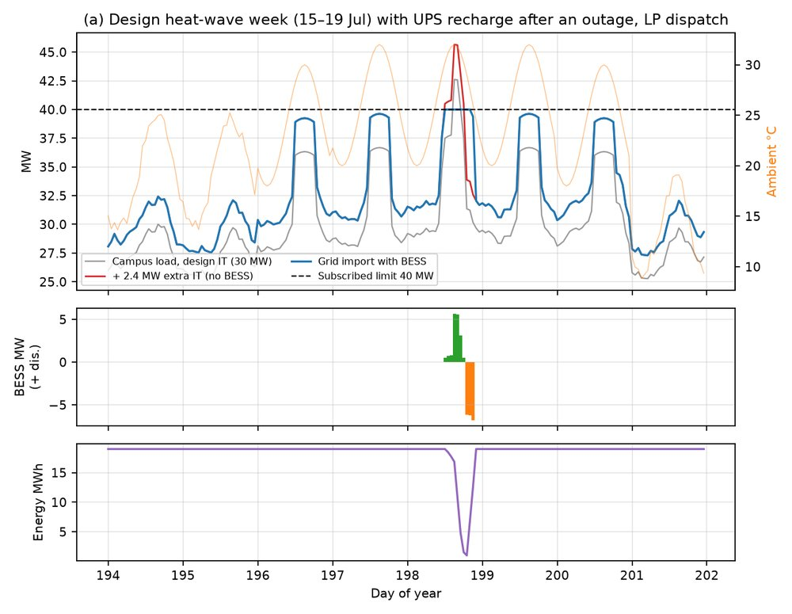
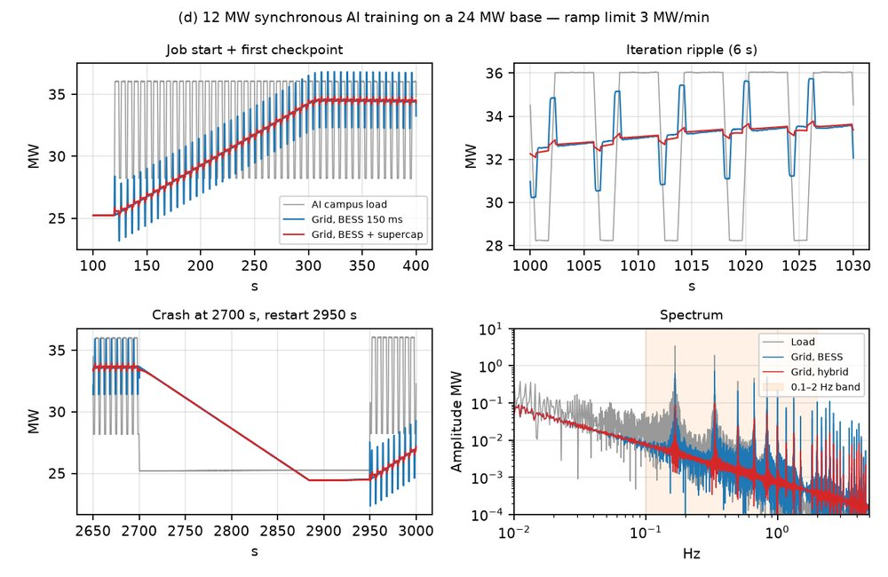
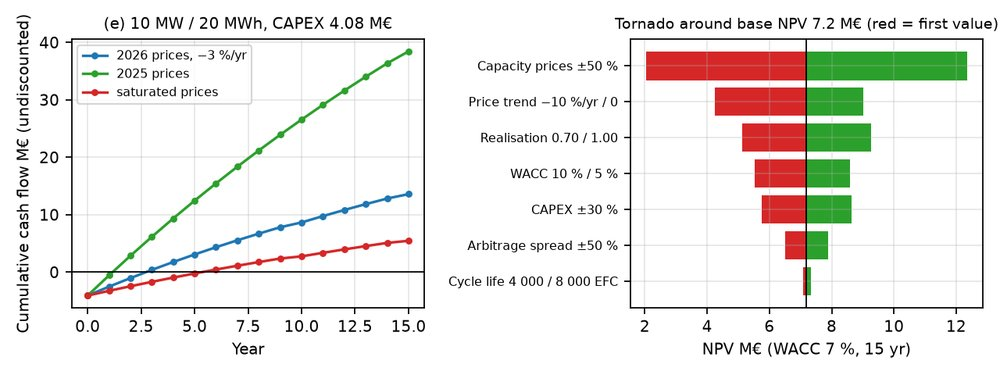
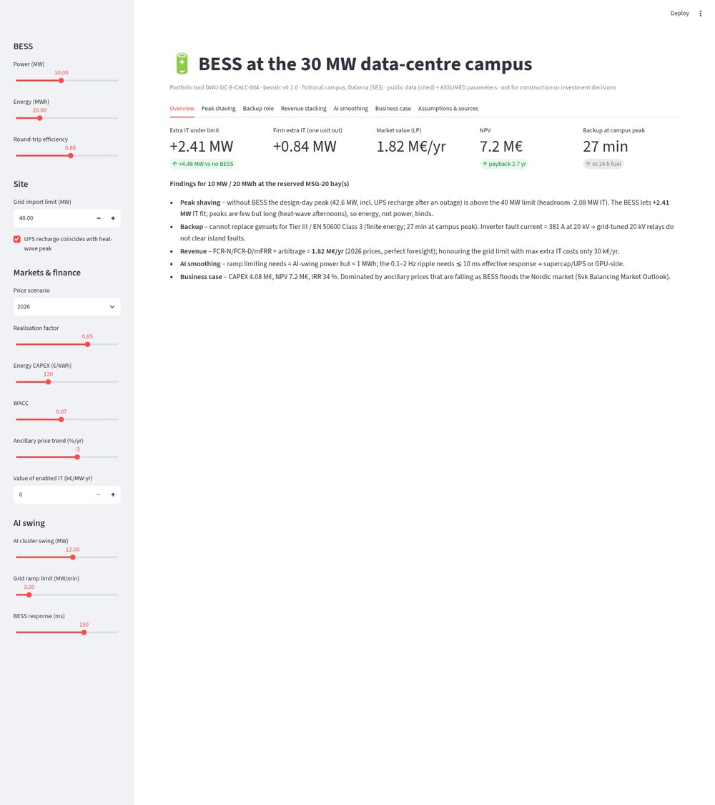

Portfolio / Project 04
bessdc: five studies of a 10 MW / 20 MWh BESS behind a 40 MW grid subscription: peak shaving, backup, revenue stacking, AI-load smoothing and the business case, with an interactive Streamlit tool.
git clone https://github.com/Fwurank/dc-electrical-portfolio.git cd dc-electrical-portfolio/04-bess pip install -r requirements.txt streamlit run app.py --server.port 8502 python scripts/make_all.py # ~60 s, all LPs and figures python -m pytest -q
Reduced previews. The full-resolution originals are in the repository.




Other projects: 01 Design basis & single-line diagrams · 02 Load & equipment sizing tool · 03 Short-circuit, protection & arc-flash study